Commander Abhilash Tomy is sharing the experience of travelling across the oceans
and continents, in his travelogue 'Kadal Ottakku Kshanichapol'. He is the first Indian
and Malayalee sailor who went around the world without stopping in the sailboat named
'Mhadei' of the Indian Navy. In this book, he describes how lands with unique features are
spread across and are interconnected on this vast earth, as he sailed from ocean to ocean.
Shall we also take up a trip around the world just like Commander Abhilash Tomy did?
Continents are large land masses that are situated among the oceans. Most of the
continents comprise many countries. Each continent has its own unique geographical
features. Shall we examine them?
'Mhadei' is the name
of the revered goddess
of the fishermen along
the Goan coast, where
centuries
ago
the
Portuguese voyaged
into the annals of
history by dropping
their anchor. From the
Indian Ocean, together
we sailed past the Pacific,
the Atlantic and the
storied capes where the
waves of history crash.
Between the wind and
the waves, never letting
each other feel lonely, we
circumnavigated the sea,
time and the world.
Kadal Ottakku Kshanichapol
(Independent translation)
(Independent translation)
Commander Abhilash Tomy
7
Through the Continents…
Page 87
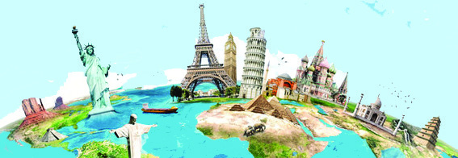
Page 88


Social Science Class VI
Social Science Class VI
88
Part I
Mark the names of the continents in the map given below.
Foremost in Size
You know that Asia is the largest continent on earth. Our country India is a part of Asia.
You know that Asia is the largest continent on earth. Our country India is a part of Asia.
Asia comprises almost one third of the land area of the earth.
Asia comprises almost one third of the land area of the earth.
Borders
East
West
South
North
Pacific Ocean
Europe
Observe and find the borders of Asia and complete the table.
North
North
America
America
South
South
America
America
Africa
Africa
Africa
Africa
Antarctica
Antarctica
Asia
Asia
Australia
Australia
Europe
Europe
North America
North America
South America
South America
Australia
Australia
Indian
Indian
Ocean
Ocean
Atlantic
Atlantic
Ocean
Ocean
Southern Ocean
Southern Ocean
Arctic
Arctic
Ocean
Ocean
Pacific
Pacific
Ocean
Ocean
Pacific
Pacific
Ocean
Ocean
Antarctica
Antarctica
Europe
Europe
Asia
Asia
Map 7.1
Page 89
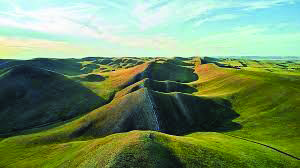

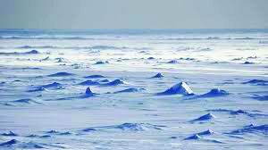


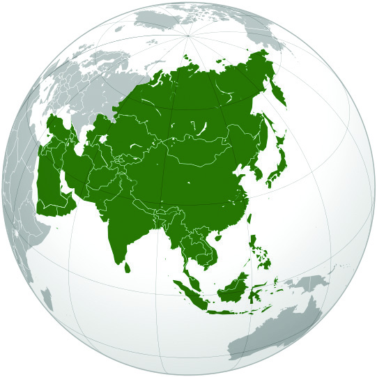
89
Social Science Class VI
Social Science Class VI
Through the Continents...
On which side of Asia is a land border?
•
The Ural mountain ranges situated on the Western
side of Asia separates Europe and Asia.
Let us get familiarised with some geographical
features of Asia.
Deserts
Deserts are regions with very low rainfall and
vast arid land areas. Deserts that experience
extreme heat are called hot deserts and those
with extreme cold are called cold deserts.
Plains
Land areas that are almost flat are called
plains. Alluvial Plains are formed from the
sediments deposited by rivers. These are
generally fertile.
Plateaus
Land areas that are elevated from the
surrounding regions, and with a comparatively
flat surface, are called plateaus.
Hot desert
Hot desert
Cold desert
Cold desert
Fig 7.2
Fig 7.2
The Himalaya mountains where the highest peak in the
world, Mount Everest is situated, is in Asia.
Which are the other mountains in Asia?
Find the locations of the Himalayas and other mountains
using an atlas.
In addition to mountains, deserts, plains and plateaus
are also geographical features of Asia. Many rivers flow
through this continent. Yangtze is the longest river in Asia.
Fig 7.1 - Ural mountain ranges
Fig 7.1 - Ural mountain ranges
Page 90


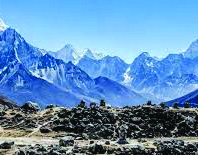
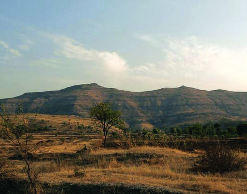
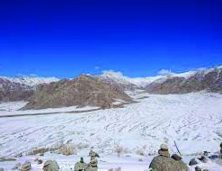

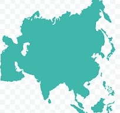

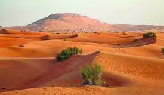
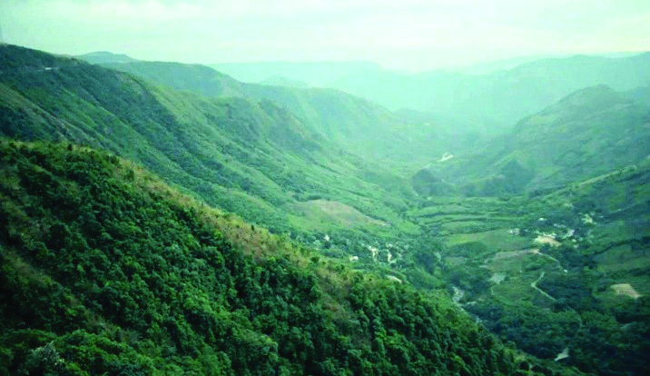

Social Science Class VI
Social Science Class VI
90
Part I
Climate
The climate of Asia is also diverse just like its geography. As the northern part of Asia is
lying close to the polar region, it experiences extreme cold. The eastern part experiences
moderate heat and cold because of the proximity to the oceans. Since the southern region
lies close to the equator, it is hot and humid and has heavy rainfall. In the arid western
region the temperature is generally high.
The following are the pictures of certain geographical features found in Asia.
Observe the pictures, find out to which landform category they belong to,
and write them down.
Siberia : The region that experiences
extreme cold
Arabian desert : The
region that experiences
extreme heat
Mawsynram : The region with
the highest rainfall in the world
Asia
Asia
Manchurian -............
Manchurian -............
The Himalayas -............
The Himalayas -............
The Thar-............
The Thar-............
Ladakh - Cold desert
Ladakh - Cold desert
Yangtze - valley
Yangtze - valley
Deccan - Plateau
Deccan - Plateau
Fig 7.3
Fig 7.3
Page 91

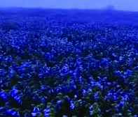

91
Social Science Class VI
Social Science Class VI
Through the Continents...
Flora and Fauna
In accordance with the climatic variations, a variety of flora and fauna can be seen in Asia.
Some Flora and Fauna in Asia
Snow Leopard
Red Panda
Neelakurinji
Human Life
Asia is the continent with the highest population in the world. 60% of the world population
resides in Asia. Most of the Asians depend on agriculture for living. Asia is the largest
producer of paddy in the world. It is the meeting place of various cultures, languages and
religions. There are bustling cities like Tokyo and Mumbai as well as villages with very
low population in Asia.
Crossing the Savannah, the Sahara and the Congo Basin...
Haven't you heard of the Equator, the Tropic of Cancer and the Tropic of Capricorn?
With the help of a globe, find the continent through which all these three pass through.
This continent has diverse geographical features that range from expansive Savannah
grasslands to dense rain forests.
Find the natural borders of Africa from map 7.1.
Africa is the second largest continent. Observe the globe; this is a continent that is spread
almost equally in the Northern and Southern hemispheres. Sahara, the largest hot desert
in the world and the Congo river basin covered with tropical rainforests are the features
of this continent. Identify the Sahara and the Congo Basin with the help of an atlas.
Rafflesia
Fig 7.4
Fig 7.4
Page 92
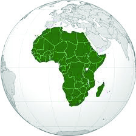

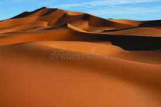


Social Science Class VI
Social Science Class VI
92
Part I
River Nile, which is the longest river in the world flows through
this continent. The highest mountain in this continent is
Kilimanjaro. Identify the other mountains in Africa from the
atlas and write down.
•
•
Fig 7.5
Fig 7.5
The Sahara Desert
The Sahara is the largest hot desert in the world.
This desert, with vast sand dunes and rocky plateaus,
is the habitat of various flora and fauna. Ethnic tribes
who adapt to adverse conditions to survive are also
a feature of the Sahara.
Tropical rainforests
Tropical rainforests are the rich and dense forests
seen in the equatorial region. This region experiences
extreme heat and receives high rainfall throughout the
year. These forests are called rainforests because they
grow in regions with heavy rain. A wider variety of
flora and fauna can be seen in these rainforests than
any other habitat on earth. Tropical rainforests can
be seen in the Amazon in South America, Congo in Africa, Malaysia in South
Eastern Asia and Indonesia.
The largest hot desert
...................................
...................................
The highest mountain
...................................
...................................
The river basin with Tropical rainforests
...................................
...................................
Vast grasslands
...................................
...................................
Complete the worksheet on the geographical characteristics of the African
continent.
Page 93
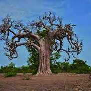
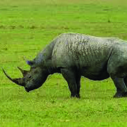
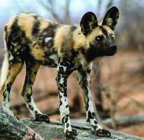


93
Social Science Class VI
Social Science Class VI
Through the Continents...
Climate
Africa, which is almost equally spread on either side of the equator, generally experiences
hot climate. Still, regional differences are also there. Moderate climate is experienced
along the coastal areas and in the regions belonging to the temperate zone.
Flora and Fauna
The Savannah grasslands and the tropical rainforests in Africa are rich in diverse flora and
fauna. The seasonal migration of animals in Serengeti is a major characteristic of Africa.
Some of the Flora and Fauna in Africa
Human Life
The majority of people in Africa live in villages and engage in agriculture. Africa is a
land, rich in cultures, languages and history. The Egyptian civilization, which was one of
the ancient civilizations, originated in Africa. Egyptian pyramids exist as an evidence of
ancient architectural expertise.
Baobab Tree
Black rhinoceros
African wild dog
Seasonal Migration of Serengeti
The seasonal migration in Africa is an
example of the phenomenon of long
journey undertaken by animals and birds as
per the climatic variations and availability
of food. The migration of millions of
zebras and gazelles in Serengeti, between
Tanzania and Kenya in search of new
pastures, is a unique phenomenon. These
migrations prove that the equilibrium of the habitats throughout Africa is
crucial for the sustenance of living beings.
Fig 7.6
Page 94


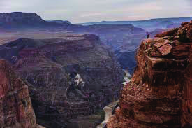
Social Science Class VI
Social Science Class VI
94
Part I
From the Rockies to the Appalachians
Observe the globe and find the continent that is surrounded
by the Pacific, the Atlantic and the Arctic oceans.
North America is a continent that has some of the developed
countries and big cities in the world. The geographical
characteristics of North America has a great role to play in
the development of its countries.
Find the natural borders of North America from map 7.1.
Appalachian and Rocky Mountains are two major mountain
ranges situated in North America. Find the location of these
mountain ranges with the help of an atlas. The fertile plains in this continent are known
as the Great Plains. The prairies are the vast grasslands of North America. Several rivers
including the Missouri and the Mississippi are there in North America. Five freshwater
lakes which are known as the Five Great Lakes are also there in this continent. The Grand
Canyon which is a huge valley situated in Arizona in North America is a wonder of the
nature.
Fig 7.7
Fig 7.7
The Grand Canyon
The Grand Canyon is a huge valley which is
about 446 km long up to 29 km wide and
more than 1500 m deep. This huge valley
was formed as a result of the action of River
Colorado over millions of years. This is a
UNESCO World Heritage Site.
Climate
The northern region of the continent experiences extreme cold as it is lying close to the
polar region. The temperature relatively increases while moving from the North to the
South.
Flora and Fauna
North America is a habitat of great variety of flora and fauna. The Sequoia forests in the
West and the grasslands in the Great Plains are examples for this.
Page 95


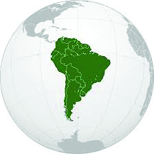

95
Social Science Class VI
Social Science Class VI
Through the Continents...
Human Life
The United States of America (USA) and Canada are renowned for their high standards
of living and technological advancement. Large metropolitan cities of the world such as
New York, Los Angeles and Mexico are situated in North America. Favourable climate
and fertile soil enrich the agricultural sector here. Inuits (Eskimos) who live in the snowy
areas is another feature of this continent.
Some varieties of flora and fauna in North America
California poppy
Saguaro cactus
Moose
Imagine yourself as a tourist guide who provides necessary information to the
tourists who visit North America and prepare a description on the characteristics
of this continent.
From the Amazon Basin…
Haven’t you heard about the Amazon rainforests? These are
called the 'Lungs of the Earth'. The Amazon forests, which is
the habitat of a huge variety of flora and fauna that are not
found anywhere else, is in South America.
Identify the natural borders of South America with the help
of an atlas.
The Andes mountain ranges which is the longest in the world
and Amazon, the largest river on earth are in South America.
The major part of the vast Amazon river basin is rainforests.
The Atacama, which is the most arid desert in the world is
another geographical feature of South America.
Fig 7.9
Fig 7.9
Fig 7.10 Amazon rainforests
and River Amazon
Fig 7.8
Page 96

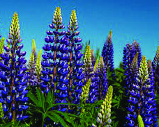
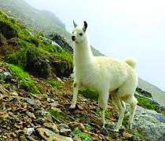

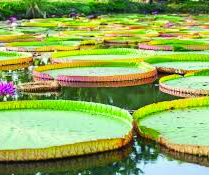

Social Science Class VI
Social Science Class VI
96
Part I
Climate
As it is in the equatorial region, the northern regions of South America are very hot and
get plenty of rainfall. The southernmost region of South America experiences extreme
cold.
Flora and Fauna
South America, which includes the Amazon rainforests is rich in biodiversity. This place
is famous for Amazon Water Lily, Anaconda and so on. The Andes mountains in South
America is the habitat of a flowering plant called Andean Lupin and mammals such as
Llama. Pantanal in South America is one of the largest tropical wetland areas in the world.
A mammal called Capybara, can be seen in this area.
Some flora and fauna in South America
Human Life
Most of the South Americans engage in agriculture, fishing and industry. This continent is
remarkable for the cultural diversity due to the presence of indigenous people, Europeans,
Africans and Asians.
Collect the pictures and details of different flora and fauna of South America
with the help of Information and Communication Technology and prepare a
wall magazine to be displayed in the class.
Andean Lupin
Andean Lupin
Llama
Llama
Capybara
Capybara
Amazon Water
Amazon Water
Lily
Lily
Page 97
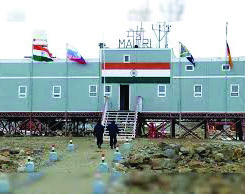


97
Social Science Class VI
Social Science Class VI
Through the Continents...
In Search of the White Continent
Look at the pictures.
Maitri and Bharati are two research centres that India had established for various studies.
In which continent are these situated?
•
98 percentage of this continent is covered by the Antarctic
glacier. Most of the pure water on Earth is contained in this
glacier.
Observe figure 7.12 and the globe, and find the location of
Antarctica. It is a continent that is surrounded entirely by the
Southern Ocean.
Let us examine the geographical features of Antarctica.
The Transantarctic mountain ranges divide the continent as
Eastern Antarctica and Western Antarctica. Antarctic peninsula is a physiographic division
of Antarctica which lies close to South America. The highest mountain in Antarctica is
Vinson Massif. Several volcanoes can also be seen in this continent.
Climate
Antarctica is a cold desert which is covered by snow throughout the year. It is the location
of Antarctica which makes its climate unique.
Flora and Fauna
Except for certain mosses that are seen in the rifts of glaciers, the rest of Antarctica is
barren. Many of the coastal regions of this continent are the habitats of Penguins and
Seals.
Fig 7.12
Fig 7.12
Fig 7.11
Maitri
Maitri
Bharati
Bharati
Page 98
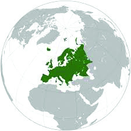
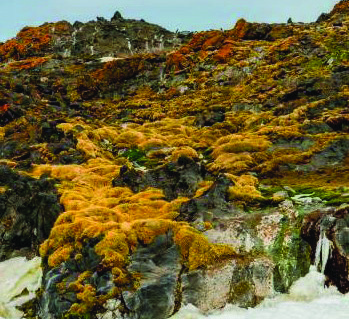
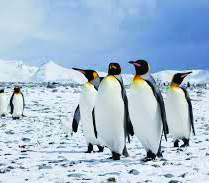
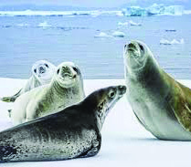
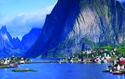
Social Science Class VI
Social Science Class VI
98
Part I
Fig 7.14
Fig 7.14
Human Life
Human habitation is very limited in Antarctica. Researchers in environmental studies and
adventure tourists are the only people who visit this place.
To the Land of Adventurous Ancient Mariners…
It was the historic voyages of adventurous mariners that helped in connecting different
parts of the world. You have been familiarised with Vasco Da
Gama's voyage to India in the previous classes. His voyages
to India by sea have a historical importance.
From which continent did he start his journey to India?
•
Shall we travel to the land of Vasco da Gama, who influenced
the history of India?
Identify the natural borders of Europe from map 7.1.
Look at certain geographical features of Europe.
Mountain ranges like the Alps, the Black Forest and the
Carpathian are situated in Europe.
Some of the longest rivers of the world such as the Danube, the Volga and the Rhine
flow through this continent. There are fertile plains and grasslands in Europe. The vast
grasslands in eastern Europe are known as the 'Steppe'. Certain areas in the northern
coastlines of Europe is rich in a special geographic feature known as 'Fjords' or 'Fiords'.
Fjords or Fiords
Fjords are narrow coastal regions that are formed
out of glacial action and surrounded by mountains
or steep slopes.
Major flora and fauna of Antarctica
Fig 7.13
Mosses
Mosses
Penguin
Penguin
Seals
Seals
Fiord coasts of Norway
Fiord coasts of Norway
Page 99
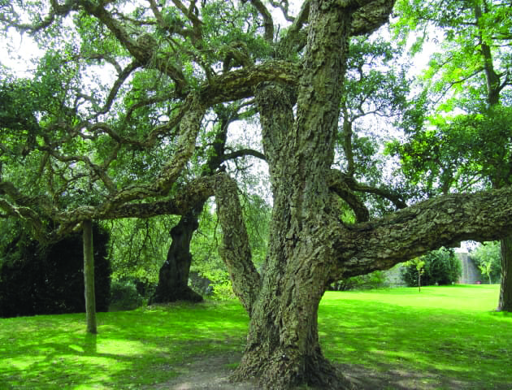

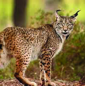


99
Social Science Class VI
Social Science Class VI
Through the Continents...
Climate
Europe generally experiences moderate heat and cold. Snowfall during winter is common
in the northern regions of this continent.
Flora and Fauna
The Alpine region of Europe is famous for its grassland and the Mediterranean regions
for vineyards.
Some of the flora and fauna of Europe
Human Life
Europeans generally maintain a high standard of living. Europe is a continent rich in art
and cultural heritage. Athens and Rome, which are among the most ancient cities of the
world, are situated in Europe. Cities such as Paris, London and Berlin are centres of art,
fashion and technology.
Prepare a note including the geographical features of Europe.
To the Land of Marsupials
Kangaroos are animals with a lot of specialities.
Australia is the continent where these are found.
Let us enquire more about Australia which is situated
completely in the southern hemisphere.
Identify and mark the natural borders of Australia
from the atlas.
Australia is the smallest continent and is completely
surrounded by the ocean.
Fig 7.16
Fig 7.16
Fig 7.15
Lynx
Lynx
Alpine Steppe Grassland
Alpine Steppe Grassland
Cork Oak Trees
Cork Oak Trees
Page 100

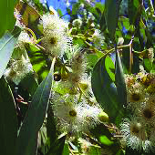
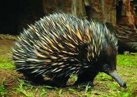


Social Science Class VI
Social Science Class VI
100
Part I
The Great Dividing Range is an important mountain range
in Australia. The Great Victoria is one of the major deserts
here. The Great Barrier Reef situated on the eastern coast
of Australia is made of coral reefs. Murray Darling river
basin is a fertile agricultural region in this continent.
Climate
The major area of Australia experiences arid climate. As we
go to the interiors of the continent the intensity of dryness
increases.
Flora and Fauna
The isolated position of Australia resulted in the evolution of flora and fauna in a different
way. Marsupials and egg-laying mammals are examples of this.
Some flora and fauna of Australia
Fig 7.17
Fig 7.17
Marsupials are an important animal species seen in Australia. Kangaroo
and Koala which carry their young ones in their belly pouches are examples.
Apart from these, egg-laying mammals like the Platypus and Echidna are
some other animals seen in Australia. Eucalyptus trees and Acacia, known
as Wattle are part of the flora here.
Echidna
Echidna
Koala
Koala
Acacia
Acacia
Platypus
Platypus
Eucalyptus
Eucalyptus
Page 101

101
Social Science Class VI
Social Science Class VI
Through the Continents...
Human Life
Australia is the land of modern cities and ancient culture. The indigenous tribal people
here possess a very rich ethnic culture. Cities like Sydney, Melbourne and Brisbane are
famous for their high standards of living and cultural activities.
Haven't you realised that each continent has unique geographical features?
If you get an opportunity to visit any of these continents which one would you choose?
Would you visit the rainforests in South America? Would you conquer the mountains
in Asia? Or would you bravely face the extreme cold in Antarctica? Our world is full of
wonders that are yet to be explored!
Desert
The Great Victoria
Region which is made up of coral reefs
...................................
...................................
A fertile river basin
...................................
...................................
Mountain range
...................................
...................................
Complete the worksheet related to the geographical features of Australia.
Page 102

Social Science Class VI
Social Science Class VI
102
Part I
Extended activities
• Prepare an identity card based on the model given, including the characteristics
of continents.
• Collect the pictures of important flora and fauna of various continents and prepare
a digital album with captions.
• Read the travelogue 'Kadal Ottakku Kshanichapol' by Commander Abhilash Tomy
and prepare a note.
• Form groups to collect data on various continents based on the indicators given
and present the seminar paper.
- Natural boundaries
- Geographical features
- Climate
- Flora and fauna
- Human Life
Asia
_
The largest continent
_ The continent in which the highest peak
Mount Everest is situated
_
The continent with highest population
_
The continent which is the largest producer
of paddy
Asia
Page 103
Page 104